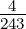
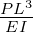
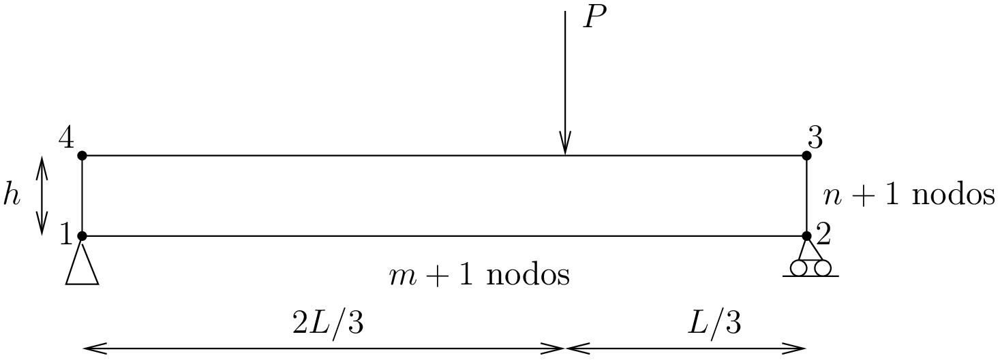

Escuela Técnica Superior de Ingenieros de Caminos, Canales y Puertos (Madrid)
Método de los Elementos Finitos (Curso 19-20)
Ejercicio 3: Elasticidad lineal
Se considera una viga biapoyada con las dimensiones y geometría indicadas en la figura, siendo L = 9 m y h = 0,8 m. El valor de la carga vertical es P = 150 kN. El módulo elástico es E = 21 GPa y el coeficiente de Poison ν = 0. Se considerará la hipótesis correspondiente a tensión plana, con un espesor t = 1 m.
Para resolver el correspondiente modelo de elementos finitos, con el programa FEAP, se considerará
una malla con 10 × 3 nodos, discretizada con elementos cuadriláteros de 4 nodos, y elementos
triangulares de 3 nodos.
NOTAS:
La malla se generará con la instrucción block, tomando las esquinas en el orden indicado en la siguiente figura.
Los elementos triangulares tendrán la hipotenusa en la dirección 1 - 3 de las esquinas del bloque.
La fórmula de Resistencia de Materiales que permite calcular la flecha en el punto donde está aplicada la carga es: f = .
